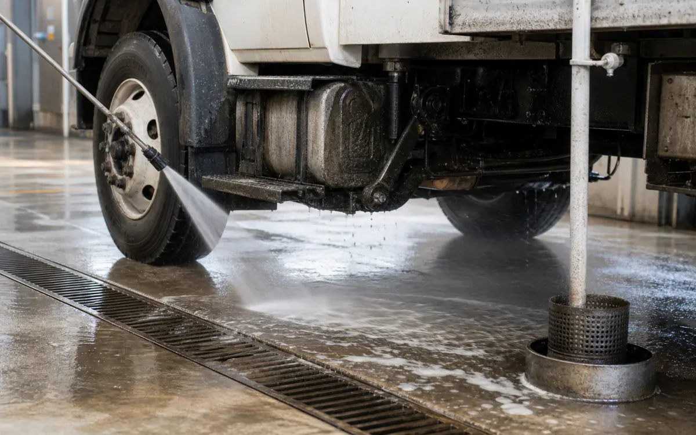
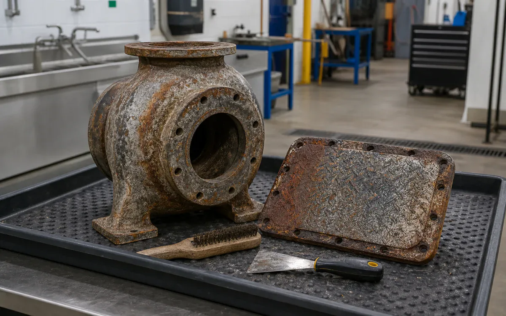

Public buyers need more than a nice label.
The procurement documentation federal, state, local, and public-facility buyers expect.
- CleanMotor-pool vehicles, ground equipment, hangar floors, public works machinery, heat exchangers, water assets, and maintenance shops
- RemovePetroleum grease, hydraulic oil, carbon, road film, rust, mineral scale, and ordinary facility soil
- MethodApproved work-card degreasing, parts cleaning, floor recovery, or isolated descaling with documented lot and operator data
- BoundaryFollow technical orders, SDS approval, LOTO, environmental plan, security/access rules, material authorization, and contract scope.
- Open task controls and documents
Why VertKleen fits Military / Government.
Public procurement requires current registration, CAGE and NAICS records, solicitation fit, country-of-origin review, current product documents, and task-specific acceptance criteria. MASEST verifies the applicable file during bid review rather than treating an identifier as product approval.
Review available evidenceWhat Military / Government buyers need documented first.
Public buyers need CAGE, NAICS, SDS, and controlled documents before they'll switch a chemistry standard.
Bundle: HCR, Descaler, CR HD, and AlumiBrite cover rust, scale, grease, and aluminum restoration, all with documentation on file.
Generated scenes illustrate tasks. Owner-confirmed field photos remain public context; only records completing the verification checklist are treated as field proof.




VertKleen products for Military / Government.
VertKleen options for Military / Government workflows.
Clean fleet, facility, and utility assets under technical-order, procurement, and chain-of-custody controls.
Task controls first. Product choice follows the asset, deposit, materials, operating window, and discharge route.
- Task
- Clean fleet, facility, and utility assets under technical-order, procurement, and chain-of-custody controls.
- Asset / substrate
- Motor-pool vehicles, ground equipment, hangar floors, public works machinery, heat exchangers, water assets, and maintenance shops
- Soil / deposit
- Petroleum grease, hydraulic oil, carbon, road film, rust, mineral scale, and ordinary facility soil
- Starting chemistry
- VertKleen CIP HCR, VertKleen Descaler, VertKleen CR HD, VertKleen AlumiBrite
- Concentration
- Use only current controlled label/TDS ranges and the task order's approved starting dilution after material and process review.
- Process controls
- Record product lot, dilution, temperature, dwell, agitation/flow, rinse, waste volume, inspection result, and return-to-service authorization.
- Shutdown / containment
- Follow technical orders, SDS approval, LOTO, environmental plan, security/access rules, material authorization, and contract scope.
- Verification endpoint
- Work-card inspection criterion, white-wipe/water-break where specified, mechanical performance endpoint, and signed chain-of-custody record.
Request SDS/TDS access or open the current public application file.
Registered users can request safety and technical sheets for staff review. Confirm revision, product identity, material compatibility, and application scope before site approval.
Bring us your Military / Government cleaning task.
The request opens with asset, soil, operating conditions, materials, wastewater route, and buying deadline already prompted.